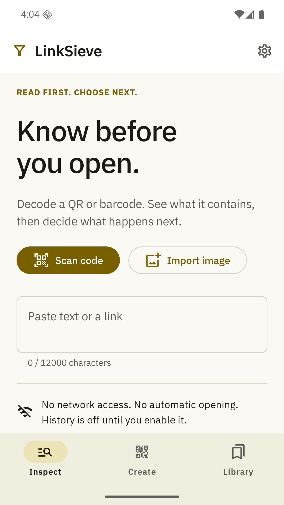
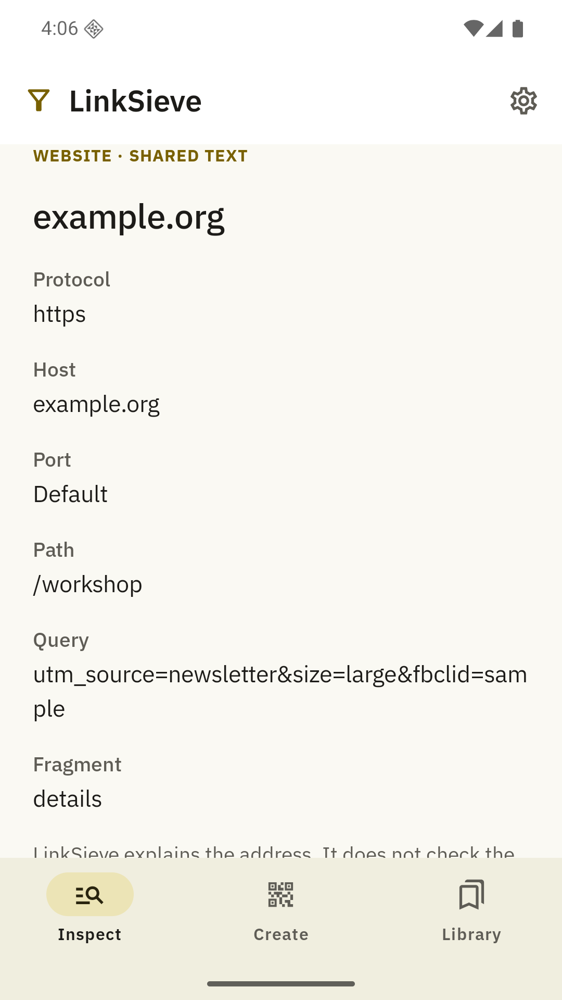
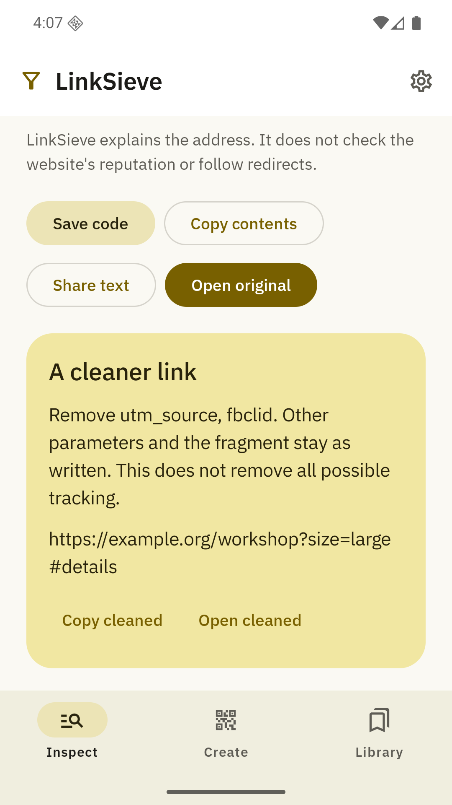
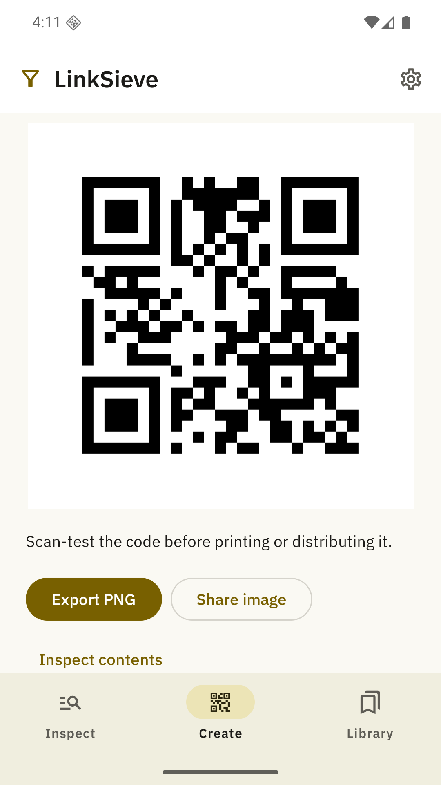

Know before
you open.
Scan a code, understand its contents, and choose what happens next. Everything starts on your device.
See the app
Read the small print
inside the code.
See the actual host, preview a cleaner address, or make a QR image of your own.

See the destination
Separate a web address into readable parts. Review notices before choosing to leave the app.

Choose a cleaner link
Preview removal of known tracking keys. Copy the result yourself. Signed links stay intact.

Make it scannable
Create text, contact, link and Wi-Fi codes. Export a full-resolution PNG without a watermark.
A pause,
then your choice.
Codes never automatically open a website, launch an app, connect to Wi-Fi or add a contact.
LinkSieve explains structure. It does not certify a website as safe, follow redirects or verify product authenticity.
Keep useful codes.
Leave the rest.
History is optional
Save and label a code yourself, or enable automatic history. Search your local library and move it with a validated backup.
Backups are unencrypted. Keep them private if they contain passwords or contact details.
Before you scan
Does LinkSieve check whether a website is safe?
No. It explains the address and identifies structural details such as HTTP, credentials and internationalized hosts. It does not perform reputation checks or follow redirects. A site can redirect after opening.
Can I use it without camera permission?
Yes. Import a selected photo or paste text. Camera permission is requested only when you choose Scan code.
Does removing tracking keys stop all tracking?
No. The preview removes recognized parameters while preserving other URL bytes. A website may use other tracking techniques. Recognized signed or token-bearing links are left unchanged.
How do I move or delete saved codes?
Export a backup from Library or Settings, then restore it on the other device. You can delete individual codes or the entire library. Android cloud backup is disabled. Exported copies need to be deleted separately.
Google Play release is in preparation. This page describes the implemented first release. Availability will be updated after Google's review.